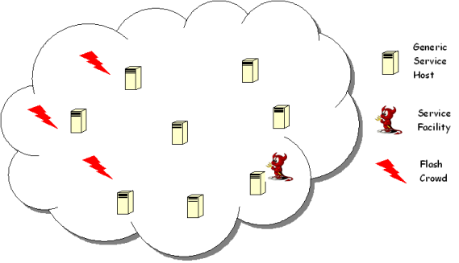

How can we determine in a distributed and scalable manner the number and
location of service facilities? We propose an innovative approach in which
topology and demand information is limited to neighborhoods, or balls of
small radius around selected facilities, whereas demand information is
captured implicitly for the remaining (remote) clients outside these
neighborhoods, by mapping them to clients on the edge of the
neighborhood. Through an iterative local reoptimization of the location
and the number of facilities within such balls, our distributed approach
achieves performance that is comparable to that of optimal, centralized
approaches requiring full topology and demand information. We demonstrate
the efficiency and scalability of our framework under various synthetic
and real Internet topologies.
Toward Dynamic Service Deployment
Key Applications:
Distribution of software updates and patches.
Real time distribution of virus definitions files.
Service Deployment with limited budget.
Key Challenges
:
An ideal deployment should be:
Scalable
Distributed
Oblivious to Network Topology
Unaware (a-priori) of the client demand
Easily Reconfigurable
Nomenclature
:
Generic Service Host: software or hardware infrastructure necessary to host a service.
Service Facility: a Generic Service Host which hosts a service.
Flash Crowd: unexpected surge of requests for a service.

Where should the Service Facility migrate?
Main Results
Our framework addresses all the aforementioned challenges. A stable set of service facilities is achieved
within a small number (logarithmic to the size of the network) of local re-optimizations.
Local information for the neighborhood of a node (within 1 or 2 hops) is sufficient.
The performance of the distributed solution based on local re-optimizations is comparable to a centralized, but
not scalable solution.
Our experimental results show that our migration protocol is responsive to dynamic changes and resilient to redirection policies.
Contact
For any further
information or bug report please send e-mail to Georgios Smaragdakis
Sponsors:
last update: October 13, 2007
All code on this page is licensed under a Creative Commons License.
Sponsors: The DFL project is supported partially by a
number of National Science Foundation grants, including CISE/CSR Award
#0720604, ENG/EFRI Award #0735974, CISE/CNS Award #0524477, CNS/CNS
Award #0520166, CNS/ITR Award #0205294, and CISE/EIA RI Award #0202067.
Disclaimer: Any opinions, findings, conclusions, or recommendations
expressed in materials available from this site are those of their
author(s) and do not necessarily reflect the views of Boston University
or of the National Science Foundation.